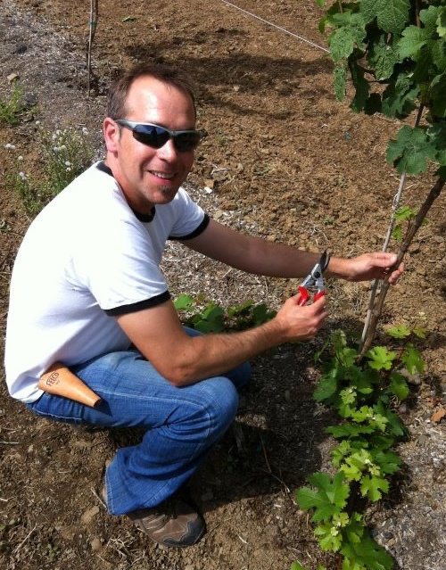
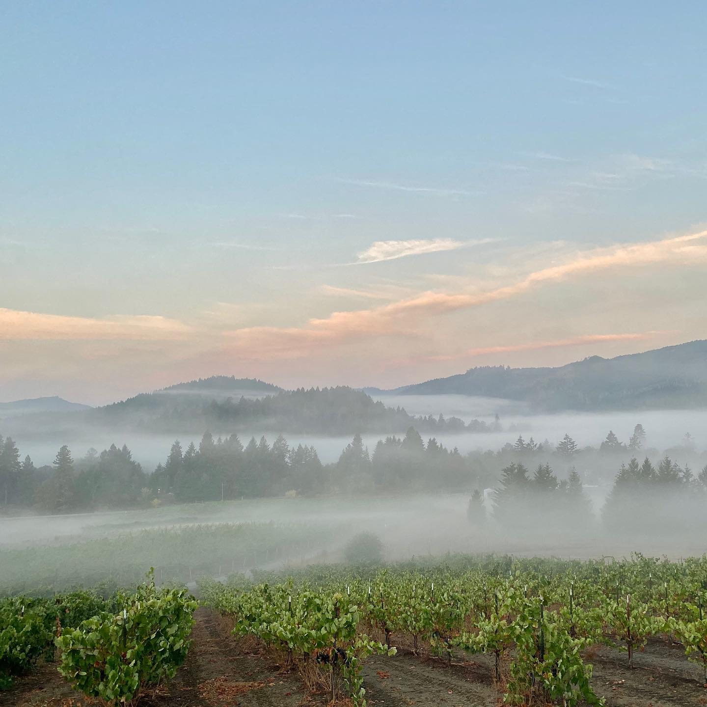
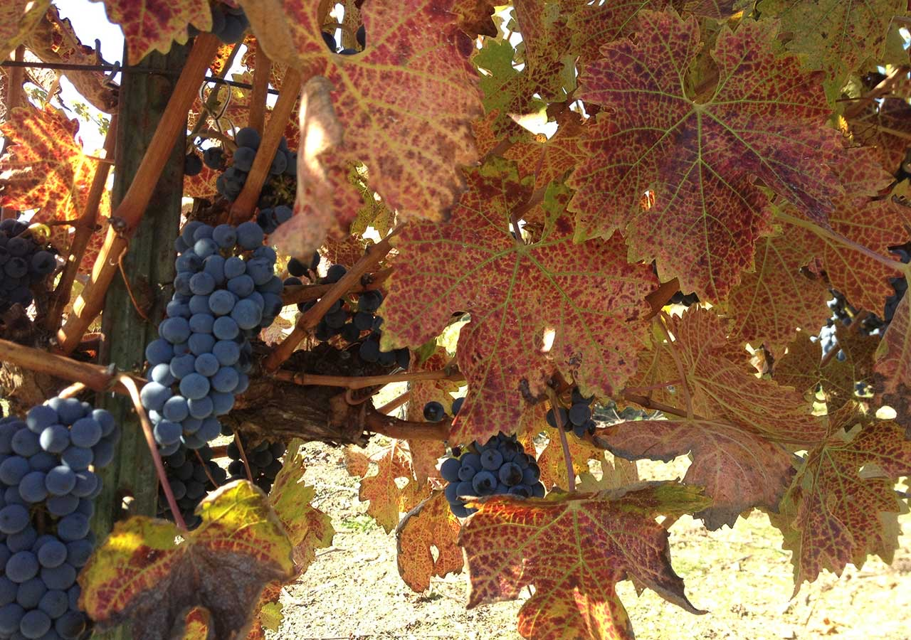
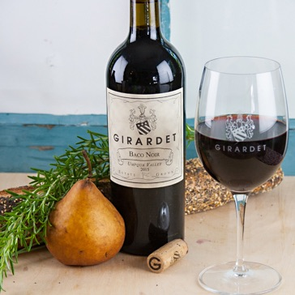
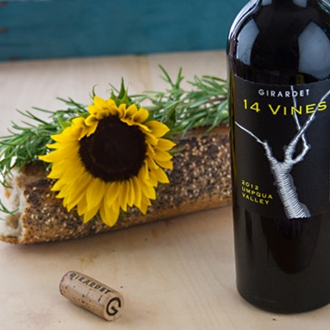
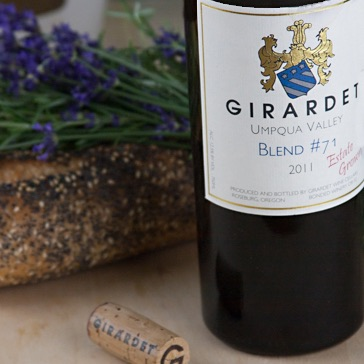
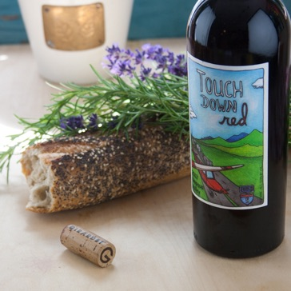
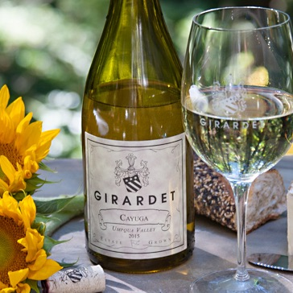
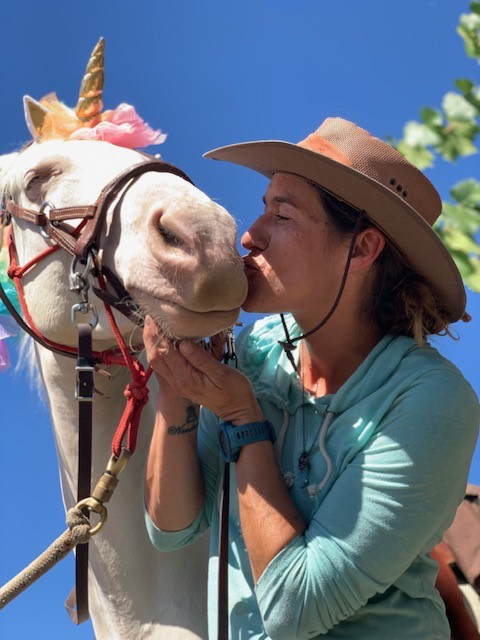
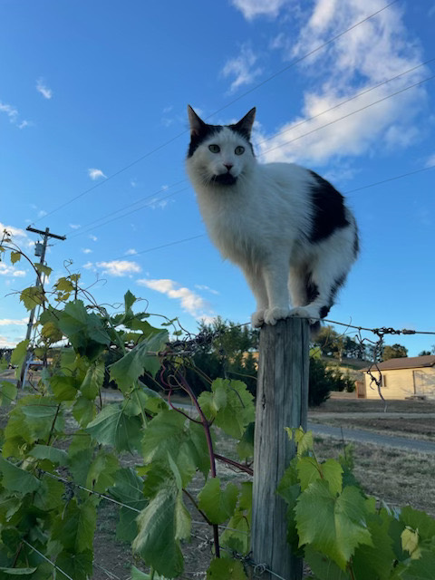

Marc
Winemaker
Second-generation Swiss-American winemaker and engineer. Took over the winemaking in 1999 – at 24, the youngest in the state.

Umpqua Valley · Southern Oregon · Since 1971
Small-batch, estate-grown wines from one of Oregon’s oldest vineyards. Leave your turbo-charged, amped-up wines behind and come taste something real.
The estate
With the first vines planted in 1971, our roots run deep. The soils here are rich in turbidites – layered sedimentary rock laid down by ancient ocean currents, 10–15 million years old.
The vineyard is a patchwork of small blocks of different grapes, completely dry-farmed and pesticide-free. Every vine is hand-pruned and hand-harvested, so the earth can speak in every glass.
“Come taste our dirt.” – Marc Girardet, winemaker
Read our story
Harvest on the estate
From the cellar

Juicy blackberry and dark roasted coffee. For most it is love at first sip.

Our secret old family recipe, a Rhone-style blend of 14 different grapes.

A Super-Tuscan style tribute to 1971, the year the first vines went in.

A red blend celebrating our winemaker’s emergency landing on I-5.

The West Coast’s first and only Cayuga. Fresh and floral.
Touchdown Red
“The only winemaker who landed an airplane on the Interstate.”
In July 2013 the engine of Marc’s Cessna Cardinal failed near Roseburg. He brought it down on Interstate 5 – and a wine was released to commemorate the experience.
More vineyard talesThe people (and the cat)

Winemaker
Second-generation Swiss-American winemaker and engineer. Took over the winemaking in 1999 – at 24, the youngest in the state.

Vineyard & tasting room
Former thoroughbred race-horse trainer and professional belly dancer, with a very hands-on approach to the vines and all the vineyard creatures.

Vineyard cat
Mornings in the vines, afternoons on the sofa. If you meet him, he loves a good back scratch and a glass of Chardonnay.
Visit the tasting room
The Girardet family welcomes visitors to the 54-acre vineyard property and tasting room in the old-time community of Tenmile – 15 minutes off Interstate 5, three-quarters of a mile off Coastal Highway 42.
Open Wed–Sun · 12–5 pm
Open year-round. Closed New Year’s Day, Easter, 4th of July, Labor Day, Thanksgiving Day, Christmas Eve, Christmas Day & New Year’s Eve.
895 Reston Road
Roseburg, OR 97471